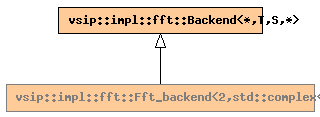

Global Namespace
Inheritance Tree
Inheritance Graph
Name Index
template <
typename
T, int
S
>
class
vsip
::
impl
::Fft_backend<2,std::complex<T>,T,S>
File:
../../../vsip/core/fft/backend.hpp
2D real inverse FFT
Primary template:
Fft_backend

-
Public Typedefs
std::complex<T>
input_value_type
T
output_value_type
-
Public Member functions
virtual
destructor
~Fft_backend
()
virtual
const char*
name
()
virtual
bool
supports_scale
()
virtual
bool
supports_cuda_memory
()
virtual
void
query_layout
(
Rt_layout
<*>&
rtl_in
,
Rt_layout
<*>&
rtl_out
)
virtual
bool
requires_copy
(
Rt_layout
<*>&)
virtual
void
out_of_place
(std::complex<T>*,
stride_type
,
stride_type
, T*,
stride_type
,
stride_type
,
length_type
,
length_type
)
complex (interleaved) -> real by-reference
virtual
void
out_of_place
(std::pair<T*, T*>,
stride_type
,
stride_type
, T*,
stride_type
,
stride_type
,
length_type
,
length_type
)
complex (split) -> real by-reference
Generated on Sat Apr 17 11:14:18 2010 by
synopsis
(version 0.12)

 synopsis (version 0.12)
synopsis (version 0.12)